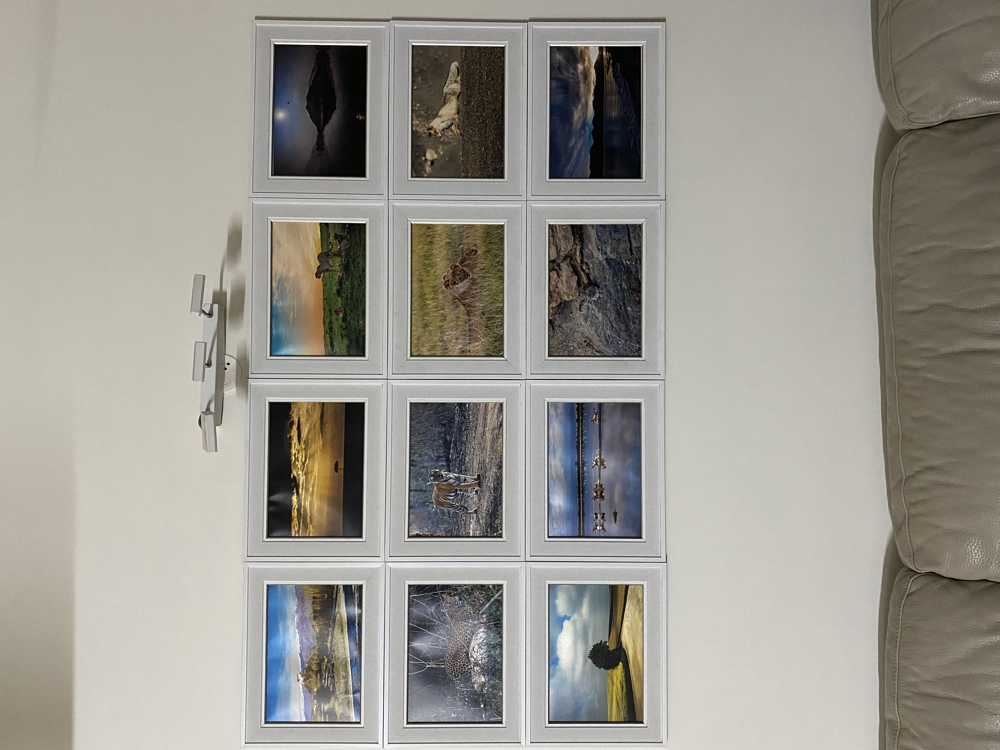

Admin
January 14, 2022
3 Comments
WILDLIFE ART IN JACKSON HOLE
As a bucket-list destination surrounded by some of the most stunning landscapes and wildlife viewing opportunities, it's only natural that Jackson Hole has made a name for itself in the art world. Serving as a gateway into Grand Teton and Yellowstone National Parks, the town sees millions of visitors from around the world each year. The iconic Teton mountain range is a must see for any traveler and the geologic phenomena of Yellowstone is something visitors will never forget, all accessible from downtown Jackson Hole.